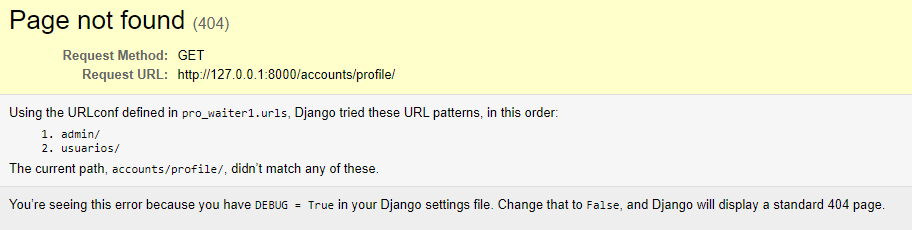

ProWaiter
Parte 1: Criando um sistema de atendimento e gerenciamento para restaurantes.
Passo 1: Criar e ativar o ambiente virtual do projeto
Com a distribuição do Python Anaconda instalada, podemos criar um novo ambiente virtual para o projeto através do seguinte comando, que deve ser executado no terminal de comando do seu sistema operacional ou no Anaconda Prompt:
conda create -n pro_waiter python
O comando anterior cria um novo ambiente virtual chamado "pro_waiter". Para ativar o ambiente virtual recém criado, utilizamos o seguinte comando:
conda activate pro_waiter
Observação:
Se você souber como criar e manter um ambiente virtual sem a utilização do Anaconda, fique a vontade para fazer da forma como já está acostumado.
Passo 2: Instalar o Django no ambiente virtual criado
Com o ambiente virtual ativado, podemos baixar o Django através do pip:
pip install django
Passo 3: Criar o projeto
Com as configurações iniciais realizadas, podemos criar a estrutura inicial do projeto Django através do seguinte comando (lembre-se de garantir que o ambiente virtual criado nos passos anteriores está ativado):
django-admin startproject pro_waiter
O comando acima criará um novo diretório com a estrutura inicial de um projeto Django. Lembre-se de que a pasta do projeto será criada no diretório que estava ativo no momento em que o comando foi executado. Então, se você quiser criar o projeto em sua área de trabalho, por exemplo, primeiro precisa mudar o diretório ativo para o diretório da área de trabalho.
Você pode navegar entre diretórios através do comando cd no prompt de Comando.
O comando criará uma nova pasta, com o nome que você deu ao projeto (pro_waiter). Dentro dessa pasta, haverá um arquivo Python chamado manage.py e uma outra pasta, com o mesmo nome do projeto, contendo mais alguns arquivos. O projeto terá a seguinte estrutura inicial:
pro_waiter/
|-- pro_waiter/
| |-- __init__.py
| |-- asgi.py
| |-- settings.py
| |-- urls.py
| `-- wsgi.py
`-- manage.py
Adicione o diretório do projeto ao seu editor de texto preferido (eu gosto do Atom) e vamos começar a programar.
Passo 4: Criando o app 'usuarios'
Um projeto Django deve ser dividido em apps, de modo que cada app agrupe uma funcionalidade específica. O primeiro app que vamos criar em nosso projeto se chama usuarios. Como o nome sugere, ele será utilizado para cuidar de tudo que estiver envolvido com contas de usuários da nossa aplicação.
Com o ambiente virtual criado ativado, e estando dentro do diretório do projeto (o diretório que contém o arquivo 'manage.py'), execute o seguinte comando para criar o app usuarios:
python manage.py startapp usuarios
O comando criará uma nova pasta com o nome do app (usuarios) dentro do diretório principal do projeto. Essa pasta vai conter todos os recursos necessários para a funcionalidade específica do app, isto é, o gerenciamento de usuários da aplicação.
pro_waiter/
|-- pro_waiter/
| |-- __init__.py
| |-- asgi.py
| |-- settings.py
| |-- urls.py
| `-- wsgi.py
|-- usuarios/
| |-- migrations/
| | `-- __init__.py
| |-- __init__.py
| |-- admin.py
| |-- apps.py
| |-- models.py
| |-- tests.py
| `-- views.py
`-- manage.py
Uma vez criado o app, precisamos adicioná-lo à lista de apps instalados presente no arquivo settings.py, que fica na pasta pro_waiter.
# pro_waiter/settings.py
...
INSTALLED_APPS = [
'django.contrib.admin',
'django.contrib.auth',
'django.contrib.contenttypes',
'django.contrib.sessions',
'django.contrib.messages',
'django.contrib.staticfiles',
#Local
'usuarios.apps.UsuariosConfig', # novo
]
...
Passo 5: Criando o modelo de usuário da aplicação
Nossa aplicação vai permitir que usuários (funcionários do restaurante) possam ter uma conta, fazer login e logout. Isso significa que vamos precisar implantar um sistema de autenticação.
Por padrão, os usuários da aplicação são representados através de objetos User, que, por padrão, possuem os seguintes atributos:
- username
- password
- first_name
- last_name
Este modelo de usuário é definido em um app que vem pré-instalado nas aplicacões Django criadas com o comando django-admin startproject ... chamado auth.
Se você observar a lista INSTALLED_APPS, no arquivo settings.py, verá que este app está lá! E é através dele que nós vamos gerenciar os usuários da nossa aplicação.
Existem muitos casos em que o modelo de usuário padrão não é suficiente para representar os usuários da sua aplicação. Por exemplo, talvez você queira armazenar dados de endereço, data de nascimento, gênero ou CPF dos seus usuários. É por isso que nós podemos criar os nossos próprios modelos de usuário.
Esses modelos de usuários customizados podem estender a funcionalidade do modelo de usuário padrão, ou podem ser definições de usuários feitas do zero.
Em nosso caso, nós faremos algumas modificações no modelo de usuário padrão. Nós não precisamos do atributo username, pois queremos que os usuários possam fazer o login na aplicação apenas com o seu endereço de e-mail, assim eles não precisarão se lembrar de mais uma informação (nome de usuário) para poderem utilizá-la.
Para definir o modelo de usuário da nossa aplicação, vamos definir as seguintes classe no arquivo models.py:
#usuarios/models.py
from django.db import models
from django.contrib.auth.base_user import BaseUserManager
from django.contrib.auth.models import AbstractUser
class UsuarioManager(BaseUserManager):
def create_user(self, email, password, **extra_fields):
if not email:
raise ValueError("O endereço de e-mail deve ser fornecido")
email = self.normalize_email(email)
user = self.model(email=email, **extra_fields)
user.set_password(password)
user.save()
return user
def create_superuser(self, email, password, **extra_fields):
extra_fields.setdefault('is_staff', True)
extra_fields.setdefault('is_superuser', True)
extra_fields.setdefault('is_active', True)
if extra_fields.get('is_staff') is not True:
raise ValueError("Superusers devem ter o campo is_staff=True.")
if extra_fields.get('is_superuser') is not True:
raise ValueError("Superusers devem ter o campo is_superuser=True.")
return self.create_user(email, password, **extra_fields)
class Usuario(AbstractUser):
username = None
email = models.EmailField(unique=True)
USERNAME_FIELD = 'email'
REQUIRED_FIELDS = []
objects = UsuarioManager()
def __str__(self):
return self.email
Primeiramente nós definimos um novo manager para o nosso modelo de usuário: UsuarioManager, que estende a classe BaseUserManager. Nesta classe, nós definimos como deve ser feito o registro de novos usuários através dos métodos create_user() e create_superuser().
A segunda classe definida é o modelo que representará os usuários da nossa aplicação: Usuario. Para que a classe estenda a funcionalidade do usuário padrão do Django, ela deve estender a classe AbstractUser.
Além disso, nós especificamos que nosso modelo de usuário não vai possuir um username, ao contrário do que especifica a classe AbstractUser. Nós também especificamos que o atributo email deve ser único entre usuários. Dessa forma não será possível que dois usuários possuam o mesmo endereço de email.
Através da variável USERNAME_FIELD nós definimos que o campo email será utilizado para autenticar os usuários da nossa aplicação. E com a variável REQUIRED_FIELDS = [] nós especicamos que não é necessário armazenar mais atributos além dos atributos email e password, que são necessários por padrão.
Já com objects = UsuarioManager(), nós substituimos o manager padrão do nosso modelo, pelo manager que nós criamos anteriormente.
Por último, através do método __str__() nós definimos que a representação dos nossos usuários na forma de string deverá ser feita através do e-mail destes.
Um último passo bastante importante é que quando um novo modelo de usuário é definido, precisamos informar ao Django que não queremos utilizar o modelo de usuário padrão, mas sim o que nós definimos. Podemos fazer isso definindo a variável AUTH_USER_MODEL no arquivo settings.py.
# pro_waiter/settings.py
...
AUTH_USER_MODEL = 'usuarios.Usuario'
É muito importante que essas configurações sejam realizadas antes de executar o comando migrate pela primeira vez.
Agora que todas essas configurações estão prontas, vamos criar um novo arquivo de migrações para o app usuarios e aplicar essas migrações. No terminal de comando, execute os seguintes comandos:
python manage.py makemigrations usuarios
Depois disso, vamos aplicar as migrações:
python manage.py migrate
Passo 6: Definindo os formulários para criação e edição de usuários no admin
Para que os formulários de criação e edição de usuários no admin da nossa aplicação possam refletir os atributos do modelo de usuário que nós definimos, precisamos criar novos formulários e especificar que queremos utilizá-los para gerenciar usuários.
Para isso, vamos criar um novo arquivo chamado forms.py dentro do app usuarios.
pro_waiter/
|-- pro_waiter/
| |-- __init__.py
| |-- asgi.py
| |-- settings.py
| |-- urls.py
| `-- wsgi.py
|-- usuarios/
| |-- migrations/
| | `-- __init__.py
| |-- __init__.py
| |-- admin.py
| |-- apps.py
| |-- forms.py #novo
| |-- models.py
| |-- tests.py
| `-- views.py
`-- manage.py
Dentro desse arquivo, vamos definir as seguintes classes para representar os formulários de criação e edição de usuários:
# usuarios/forms.py
from django.contrib.auth.forms import UserCreationForm, UserChangeForm
from django.contrib.auth import get_user_model
class CustomUserCreationForm(UserCreationForm):
class Meta:
model = get_user_model()
fields = ('email',)
class CustomUserChangeForm(UserChangeForm):
class Meta:
model = get_user_model()
fields = ('email',)
Agora precisamos informar o admin que os formulários que criamos deverão ser utilizados para criar e editar usuários. Para isso, façamos as seguintes alterações no arquivo admin.py do app usuarios:
# usuarios/admin.py
from django.contrib import admin
from django.contrib.auth.admin import UserAdmin
from .forms import CustomUserCreationForm, CustomUserChangeForm
from django.contrib.auth import get_user_model
Usuario = get_user_model()
class CustomUserAdmin(UserAdmin):
add_form = CustomUserCreationForm
form = CustomUserChangeForm
model = Usuario
list_display = ('email', 'is_staff', 'is_active')
fieldsets = (
(None, {'fields': ('email', 'password')}),
('Permissions', {'fields': ('is_staff', 'is_active')}),
)
add_fieldsets = (
(None, {
'classes': ('wide',),
'fields': ('email', 'password1', 'password2', 'is_staff', 'is_active')}
),
)
search_fields = ('email',)
ordering = ('email', )
admin.site.register(Usuario, CustomUserAdmin)
Agora podemos criar um novo superuser para acessar o admin e verificar se tudo está funcionando como o esperado.
No terminal de comando, execute o seguinte comando e preencha as informações solicitadas:
python manage.py createsuperuser
Veja que o Python solicitou apenas um email e uma senha, e não um nome de usuário como de costume.
Agora, para acessar o admin, vamos iniciar o servidor de testes:
python manage.py runserver
Agora acesse a URL http://127.0.0.1:8000/admin/ em seu navegador, preencha o formulário de login com os dados do superuser que você acabou de criar e clique em Users para verificar que tudo está funcionando corretamente.
Passo 7: Logando usuários
Nossa aplicação já é capaz de registrar usuários através do Admin, mas agora nós vamos possibilitar que usuários registrados possam fazer o login em nosso sistema através de sua conta.
Para isso, nós vamos utilizar uma Class Based View pronta do Django, que será responsável por autenticar usuários.
Primeiramente, vamos fazer uma modificação no arquivo urls.py do projeto, para que qualquer URL do tipo http://HOST/usuarios/ seja resolvida por um arquivo de URL's próprio do app usuários.
# pro_waiter/urls.py
from django.contrib import admin
from django.urls import path, include # novo
urlpatterns = [
path('admin/', admin.site.urls),
path('usuarios/', include('usuarios.urls')), # novo
]
Agora vamos criar um novo arquivo urls.py dentro do diretóro do app usuarios.
# usuarios/urls.py
from django.urls import path
from . import views
urlpatterns = [
path('entrar/', views.LoginUsuario.as_view(), name='entrar'),
]
Aqui nós definimos que ao acessar a url http://HOST/usuarios/entrar/ a Class Based View LoginUsuario será chamada.
No passo anterior nós especificamos uma view que ainda não existe (LoginUsuario). Vamos, então, criá-la no arquivo views.py do app usuarios.
# usuarios/views.py
from django.contrib.auth.views import LoginView
class LoginUsuario(LoginView):
template_name = 'usuarios/entrar.html'
O único atributo que nós especificamos é o template_name. Através dele nós especificamos o nome do template (que ainda será criado) que será renderizado para mostrar o formulário de login de usuários. Vamos, agora, criar esse template.
Dentro do diretório do app usuarios vamos criar uma nova pasta chamada templates. E dentro da pasta templates, vamos criar outra pasta chamada usuarios. E nesta pasta nós criaremos o template entrar.html, especificado no passo anterior.
<!-- usuarios/templates/usuarios/entrar.html -->
<!doctype html>
<html lang="en">
<head>
<!-- Required meta tags -->
<meta charset="utf-8">
<meta name="viewport" content="width=device-width, initial-scale=1">
<!-- Bootstrap CSS -->
<link href="https://cdn.jsdelivr.net/npm/bootstrap@5.0.2/dist/css/bootstrap.min.css" rel="stylesheet" integrity="sha384-EVSTQN3/azprG1Anm3QDgpJLIm9Nao0Yz1ztcQTwFspd3yD65VohhpuuCOmLASjC" crossorigin="anonymous">
<title>Entrar</title>
</head>
<body>
<div class="container">
<h1>Entrar</h1>
<p>
Preencha o formulário para fazer o login.
</p>
<form method="post">
{% csrf_token %}
{{ form }}
<br>
<input type="submit" value="Entrar">
</form>
</div>
<!-- Option 1: Bootstrap Bundle with Popper -->
<script src="https://cdn.jsdelivr.net/npm/bootstrap@5.0.2/dist/js/bootstrap.bundle.min.js" integrity="sha384-MrcW6ZMFYlzcLA8Nl+NtUVF0sA7MsXsP1UyJoMp4YLEuNSfAP+JcXn/tWtIaxVXM" crossorigin="anonymous"></script>
</body>
</html>
A view que nós criamos no passo anterior, LoginUsuario, que herda de LoginView renderiza o template especificado através do atributo tempalte_name com a variável de contexto form para carregar o formulário de login. Além disso, a view trata os dados do formulário preenchido autenticando o usuário e fazendo o login, ou informando uma mensagem de erros casso o formulário seja erroneamente preenchido.
Agora, podemos visitar a URL http://HOST/usuarios/entrar/ para ver o formulário de login.

É... Lá está o formulário. Porém a aparência dele é horrível. Vamos utilizar um pacote para melhorar a forma como o formulário é renderizado.
No terminal de comando, com o ambiente virtual do projeto ativado, execute o seguinte comando para baixar no ambiente o pacote
pip install django-crispy-forms
Agora vamos fazer as seguintes modificações no arquivo settings.py para que o Django tenha conhecimento do pacote instalado.
# pro_waiter/settings.py
INSTALLED_APPS = [
'django.contrib.admin',
'django.contrib.auth',
'django.contrib.contenttypes',
'django.contrib.sessions',
'django.contrib.messages',
'django.contrib.staticfiles',
# 3rd party
'crispy_forms', #novo
# Local
'usuarios.apps.UsuariosConfig',
]
# django-crispy-forms
CRISPY_TEMPLATE_PACK = 'bootstrap4' #novo
Com o pacote instalado, só precisamos carregar as tags crispy no inicio do template entrar.html e carregar o form com o filtro crispy.
<!-- usuarios/templates/usuarios/entrar.html -->
<!doctype html>
<!-- Novo -->
{% load crispy_forms_tags %}
<html lang="en">
<head>
<!-- Required meta tags -->
<meta charset="utf-8">
<meta name="viewport" content="width=device-width, initial-scale=1">
<!-- Bootstrap CSS -->
<link href="https://cdn.jsdelivr.net/npm/bootstrap@5.0.2/dist/css/bootstrap.min.css" rel="stylesheet" integrity="sha384-EVSTQN3/azprG1Anm3QDgpJLIm9Nao0Yz1ztcQTwFspd3yD65VohhpuuCOmLASjC" crossorigin="anonymous">
<title>Entrar</title>
</head>
<body>
<div class="container">
<h1>Entrar</h1>
<p>
Preencha o formulário para fazer o login.
</p>
<form method="post">
{% csrf_token %}
<!-- Novo -->
{{ form|crispy }}
<br>
<input type="submit" value="Entrar">
</form>
</div>
<!-- Option 1: Bootstrap Bundle with Popper -->
<script src="https://cdn.jsdelivr.net/npm/bootstrap@5.0.2/dist/js/bootstrap.bundle.min.js" integrity="sha384-MrcW6ZMFYlzcLA8Nl+NtUVF0sA7MsXsP1UyJoMp4YLEuNSfAP+JcXn/tWtIaxVXM" crossorigin="anonymous"></script>
</body>
</html>
Vamos iniciar o servidor de teste novamente e voltar para a página de login.
Agora o formulário ficou muito melhor.

Por fim, vamos adicionar uma classe bootstrap ao botão e margem superior no container.
<!-- usuarios/templates/usuarios/entrar.html -->
<!doctype html>
{% load crispy_forms_tags %}
<html lang="en">
<head>
<!-- Required meta tags -->
<meta charset="utf-8">
<meta name="viewport" content="width=device-width, initial-scale=1">
<!-- Bootstrap CSS -->
<link href="https://cdn.jsdelivr.net/npm/bootstrap@5.0.2/dist/css/bootstrap.min.css" rel="stylesheet" integrity="sha384-EVSTQN3/azprG1Anm3QDgpJLIm9Nao0Yz1ztcQTwFspd3yD65VohhpuuCOmLASjC" crossorigin="anonymous">
<title>Entrar</title>
</head>
<body>
<div class="container mt-5">
<h1>Entrar</h1>
<p>
Preencha o formulário para fazer o login.
</p>
<form method="post">
{% csrf_token %}
{{ form|crispy }}
<br>
<input type="submit" class="btn btn-success" value="Entrar">
</form>
</div>
<!-- Option 1: Bootstrap Bundle with Popper -->
<script src="https://cdn.jsdelivr.net/npm/bootstrap@5.0.2/dist/js/bootstrap.bundle.min.js" integrity="sha384-MrcW6ZMFYlzcLA8Nl+NtUVF0sA7MsXsP1UyJoMp4YLEuNSfAP+JcXn/tWtIaxVXM" crossorigin="anonymous"></script>
</body>
</html>
Há, ainda, uma última configuração a ser realizada. Se você tentar fazer o login através deste formulário com os dados corretos, verá que um erro ainda existe:
Este erro está relacionado com a página que o usuário recém logado é redirecionado. Por padrão, após o login o Django tenta acessar a página na URL http://HOST/accounts/profile/. Porém essa URL não está definida na nossa aplicação. Portanto, vamos alterar o redirecionamento após o login.
Para, isso, precisamos especificar o nome de uma URL válida na variável LOGIN_REDIRECT_URL do arquivo settings.py.
# pro_waiter/settings.py
...
LOGIN_REDIRECT_URL = 'painel_garcom'
...
Veja que nós especificamos o nome de uma URL que ainda não existe, ou seja, um erro ainda será gerado após o login, mas vamos criá-la nos próximos passos.
Obrigado
Parabéns por ter chegado até aqui! Nos vemos no próximo tutorial.